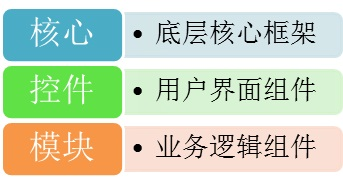
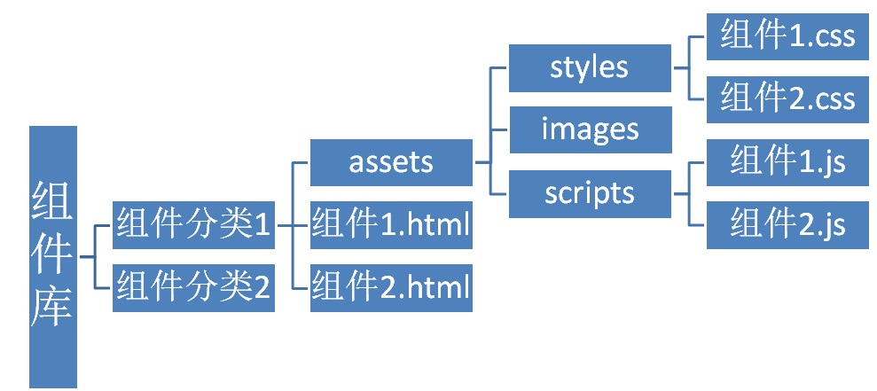

组件分类

组件的构成
一个组件包含了它对应的 js、css和html文件。
比如在 控件 大分类 下的 Form 分类下新建的一个 TextBox 组件。它的
- 名字空间为
- Controls.Form.TextBox
- 对应的文件为
- controls/form/textbox.html（用于测试、演示组件）
- controls/form/assets/scripts/textbox.js
- controls/form/assets/styles/textbox.less（如果不使用LESS，则对应为css）
- 它对应的图片文件夹为
- controls/form/assets/images
组件库文件结构

组件库工作方式